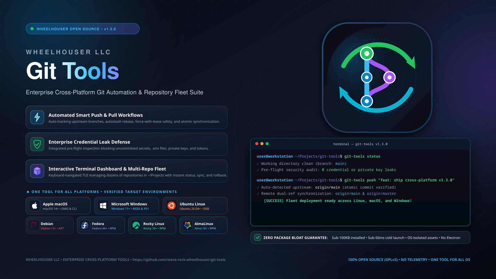
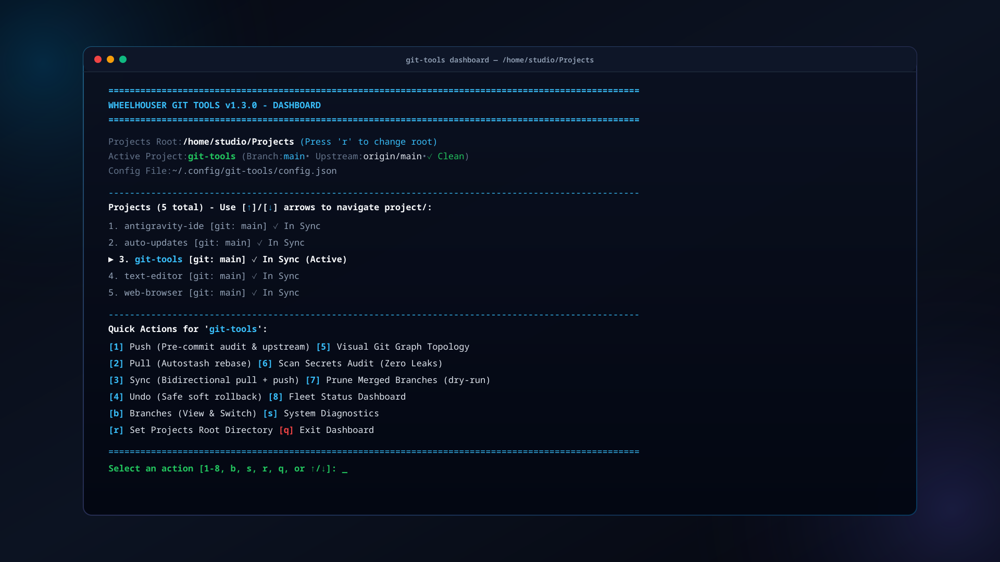
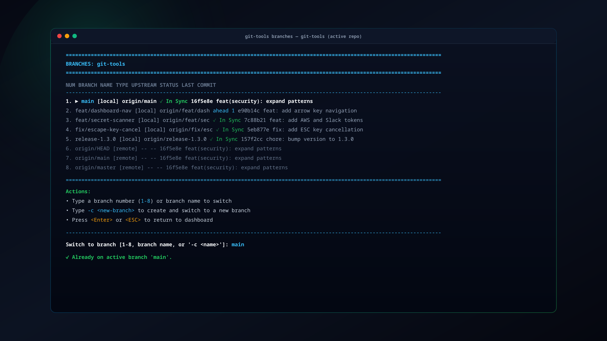
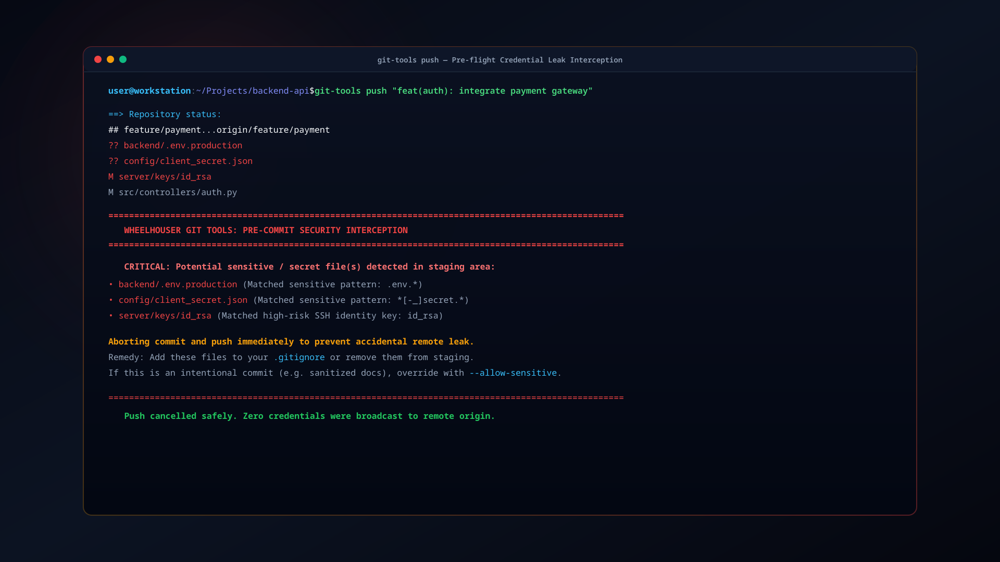

Wheelhouser LLC
Wheelhouser LLC
Git Tools
High-velocity Git automation, interactive terminal fleet dashboard, safe commit undo, and pre-flight credential leak defense across Linux, Windows, and macOS.




Scroll for more images →
The High-Velocity Git Suite for Solo Developers and Teams
Git is the bedrock of modern software development, yet its day-to-day command-line workflow remains full of recurring papercuts: forgetting --set-upstream on newly created branches, having pull operations abort due to uncommitted working files, cluttering local repositories with stale merged branches, and the nightmare of accidentally committing a sensitive .env file or private SSH key.
Wheelhouser Git Tools wraps standard Git with intelligent, native automation and ironclad security guardrails. Rather than burdening your workstation with 500 MB Electron-based desktop clients, git-tools delivers instant terminal commands, a keyboard-driven multi-repository fleet dashboard, non-destructive undo operations, and automated secret scanning—with 100% feature parity across Linux, Windows, and macOS.
Key Capabilities
- Automated Push & Pull Workflows: Run
pushto stage, commit, and push with automatic upstream tracking. Runpullto automatically autostash working changes, rebase cleanly, and pop changes back without merge conflicts. - Interactive Terminal Fleet Dashboard: Launch
git-tools dashboard(orgit-tools-launcher) for an instant visual overview of every repository in~/Projects/. Navigate seamlessly with arrow keys ([↑]/[↓]), inspect branch states, and pull updates with a single keystroke. - Pre-Flight Credential Leak Protection: Integrated secret scanning (
git-tools scan-secrets) automatically checks staged diffs against patterns for.envfiles, private keys (.pem,.key,.p12), AWS tokens, GitHub PATs, and SSH keys, preventing accidental exposure before commits reach GitHub. - Safe Soft Rollbacks: The
undocommand executes a non-destructive soft reset (git reset --soft HEAD~1), uncommitting changes while keeping your working tree and staging area completely intact. - Visual Branch Topology & Switching: View active and remote branches with commit previews, tracking status, and ahead/behind counters using
git-tools branches, or switch branches instantly withgit-tools switch <branch>. - Automatic Merged Branch Hygiene: Run
git-tools prune-branchesto safely delete local branches that have already been merged into upstream, with built-in safeguards protecting critical branches (main,master,production). - Universal Cross-Platform Native Parity: Zero-overhead native CLI shims on Linux (Bash/Python), macOS (Zsh/Bash), and Windows (PowerShell/CMD). A command that runs on Linux works identically on Windows and macOS.
- Seamless Desktop Integration: Includes an AppStream-compliant
.desktopentry and terminal launcher for GNOME Software, KDE Discover, and desktop application menus.
Comparative Analysis
How git-tools compares against standard Git CLI and traditional graphical clients:
| Capability | Raw Git CLI | Heavy Desktop GUIs | Wheelhouser Git Tools |
|---|---|---|---|
| Memory Footprint | ~5 MB | 300 MB – 1 GB (Electron) | < 25 MB (Native Python / C) |
| Startup Latency | Instant | 3 – 8 seconds | Instant (< 0.05s) |
| Smart Autostash Pull | Manual git stash |
Multi-click popups | Single command: pull |
| Multi-Repo Fleet Dashboard | None (cd into each repo) | Cluttered multi-window UI | git-tools dashboard (TUI) |
| Pre-Commit Secret Scanner | Requires external hooks | Rarely integrated | Built-in: scan-secrets |
| Safe Commit Undo | Complex git reset --soft |
Dialog confirmation | Single command: undo |
| Cross-Platform Parity | Platform-specific shell syntax | Separate builds / OS differences | Identical CLI on Linux, Mac, Win |
Everyday Developer Commands
The git-tools suite integrates directly into your terminal workflow:
# Stage, commit, and push with automatic upstream tracking:
push "feat: implement real-time event pipeline"
# Safely pull with automatic stashing of uncommitted files:
pull
# Two-way synchronization:
sync
# Safely undo the latest commit without losing any uncommitted work:
undo
# Open interactive terminal fleet dashboard across all repositories:
git-tools dashboard
# Audit repository for accidentally exposed secrets, API keys, or certificates:
git-tools scan-secrets
# Inspect branch topology and upstream tracking status:
git-tools branches
# Switch branches or create a new branch:
git-tools switch feature-auth
# Safely prune local branches already merged into main:
git-tools prune-branches
# View the full Unix manual page:
man git-toolsDownloads & Installation
Rocky Linux 10 • AlmaLinux 10
Install via Wheelhouser RPM Repository:
sudo dnf install https://repo.wheelhouser.com/rocky/10/x86_64/steve-rock-wheelhouser-release-1.0-6.el10.noarch.rpm
sudo dnf install -y git-tools
git-tools statusFedora Linux 44 • Fedora 45
Install via Wheelhouser RPM Repository:
sudo dnf install https://repo.wheelhouser.com/fedora/44/x86_64/steve-rock-wheelhouser-release-1.0-6.fc44.noarch.rpm
sudo dnf install -y git-tools
git-tools statusDebian 13 (Trixie) • Ubuntu 26.04 LTS
Install GPG keyring, repository source, and package:
sudo install -m 0755 -d /etc/apt/keyrings && \
curl -fsSL https://repo.wheelhouser.com/steve-rock-wheelhouser-gpg.key | sudo gpg --dearmor --yes -o /etc/apt/keyrings/wheelhouser.gpg && \
sudo chmod a+r /etc/apt/keyrings/wheelhouser.gpg && \
echo "deb [signed-by=/etc/apt/keyrings/wheelhouser.gpg] https://repo.wheelhouser.com/debian/13 ./" | sudo tee /etc/apt/sources.list.d/wheelhouser.list && \
sudo apt update && sudo apt install -y git-tools && \
git-tools statusWindows 10 / 11 (MSIX / Sideload)
One-line PowerShell install with Authenticode verification:
iwr -Uri "https://staging.wheelhouser.com/downloads/git-tools/windows/git-tools-1.4.1-Sideload.msix" -OutFile "$env:TEMP\git-tools.msix"; Add-AppxPackage -Path "$env:TEMP\git-tools.msix"macOS (Apple Silicon • Intel)
Native DMG installer images:
Wheelhouser Linux Repository (RPM & APT) View Source Code on GitHub